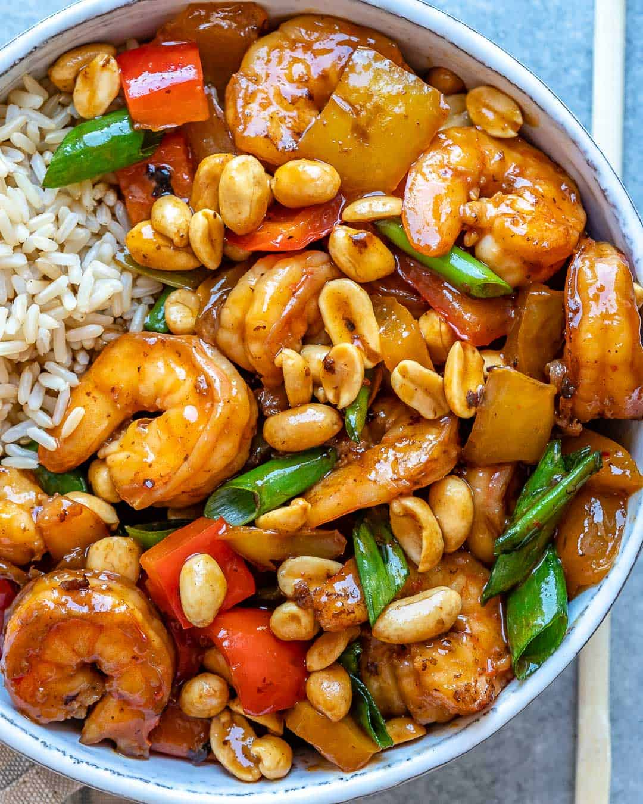

Kung Pao Shrimp

Kung Pao shrimp is a sweet and spicy combination of fresh, crisp, sautéed veggies with shrimp
Ingredients/Variations
- SHRIMP
- VEGGIES
- SAUCE
- PEANUTS
Just a few simple steps and a special dinner will be on the table!
- Toss shrimp with cornstarch & soy sauce (this tenderizes and adds a nice crust).
- Cook onions, then bell peppers and garlic, ginger, and red pepper flakes.
- Simmer Add the sauce to the skillet and the shrimp and cook until thickened.